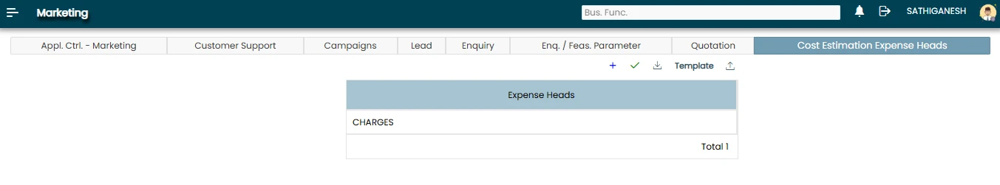

<div data-category="CRM" data-title="Cost Estimation Expense Heads" data-updated="December 01, 2025" data-contributors="RoadmapIT" data-breadcrumb="Home,CRM,Cost Estimation Expense Heads">
  <div class="page-content">
    <p>Cost estimation involves predicting the financial resources required to complete a project. Expense heads are categories under which these costs are organized. in marketing Cost estimation Expense Heads are all configured in this screen.</p>
    <h5>Navigation path:</h5>
    <p class="fs-6">CRM \ Setup \ Setup-Marketing \ Cost Estimation Expense Heads</p>
    
    <ul style="list-style-type: none; align-content: center">
      <li class="mouse-icon">
        Click on
        <i class="bi bi-plus fs-4 mx-2 text-primary"></i>
        button
      </li>
      <li class="mouse-icon">Enter the Expense Heads</li>
      <li class="mouse-icon">Save (Refer: Operating Instruction Doc How to Save)</li>
      <li class="mouse-icon">
        Click
        <i class="bi bi-check-lg fs-4 mx-1 text-success"></i>
        to save
      </li>
    </ul>
  </div>
</div>